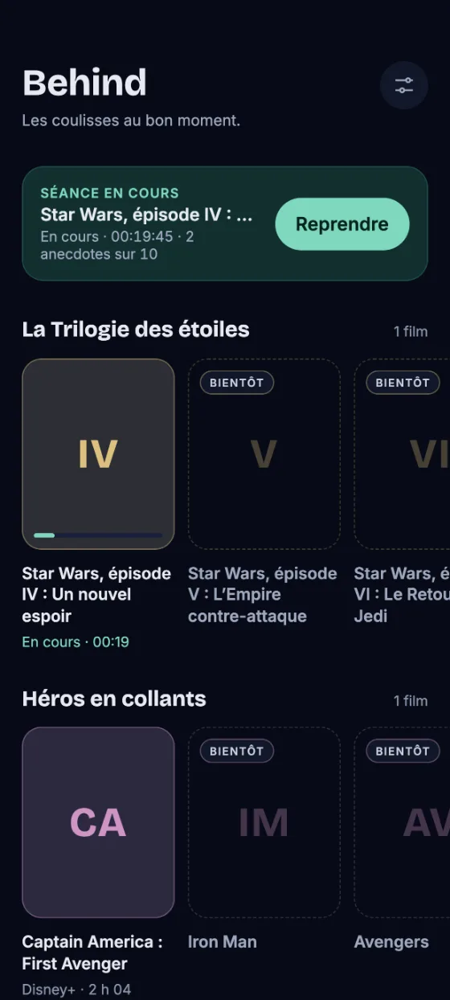
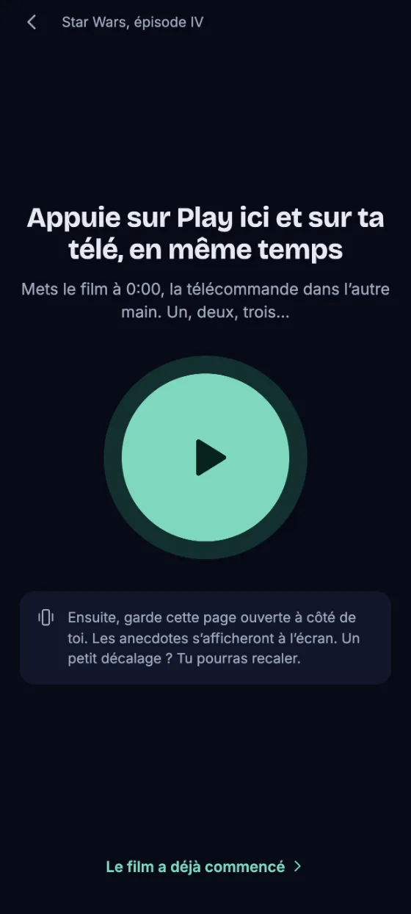
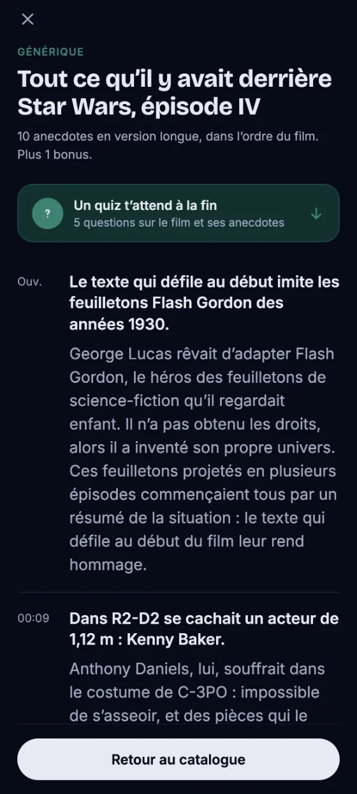

Comment ça marche
Lance le film, Behind s’occupe du reste.
Démarre avec le film
Appuie sur Play en même temps que le film. Tu commences en retard ? Dis où tu en es, Behind se cale.
Une vibration, une anecdote
Au bon moment, ton téléphone vibre doucement : une anecdote de tournage tient en trois lignes. Déplie la carte pour en savoir plus.
Le récapitulatif et le quiz
Après le générique, retrouve toutes les anecdotes en version longue, puis teste ce que tu as retenu.
Pensé pour le noir
Pour ne rien gâcher du film.
- Jamais pendant une scène forte : l’anecdote attend le moment calme qui suit.
- Zéro spoiler : on ne parle que de ce que tu as déjà vu.
- Une anecdote toutes les dix minutes environ, pas plus.
- Un écran très sombre, et des alertes même écran verrouillé.
- Décalé ? Pause, boutons de recalage et scènes repères pour retrouver le fil.
Aperçu
L’application en images.



Films disponibles
Cinq films pour commencer.
- Star Wars, épisode IV : Un nouvel espoir
- Captain America : First Avenger
- Harry Potter à l’école des sorciers
- Scary Movie
- Pirates des Caraïbes : La Malédiction du Black Pearl
Chaque film est calé sur une version précise, pour que les anecdotes tombent au bon moment. De nouveaux films arrivent régulièrement.
Behind grandit
L’appli est encore jeune.
Elle s’améliore grâce à tes retours
De nouveaux films arrivent régulièrement, et d’autres fonctions sont à l’étude.
Donne ton avis
Réponds au questionnaire (environ 1 minute) ou propose un film.
Prêt pour ta prochaine séance ?
Choisis ton film, lance Behind en même temps, et laisse les coulisses venir à toi.
Télécharger sur Google Play Android, téléphone et tablette · sans compte et sans publicité